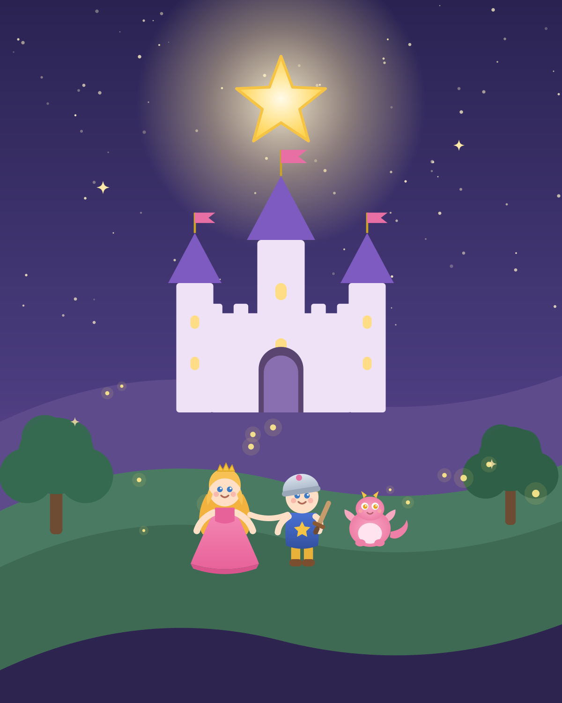

For Lia and Laughlin —
may you always be as brave as you are kind,
and may every star you wish on
shine right back at you.
When the Great Star above the Kingdom of Everbright goes dim, it takes a brave princess, the littlest knight, and one very lonely baby dragon to light it up again.
A bedtime adventure about holding hands, being brave, and the magic of a kind heart.